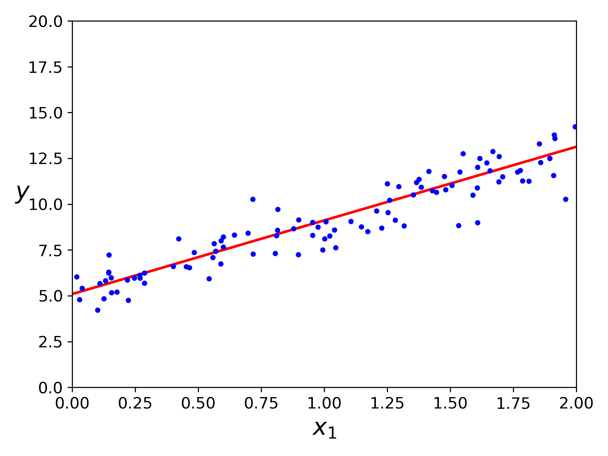

Linear Regression is usually the first machine learning algorithm that every data scientist and machine learning engineer comes across. It is quite a simple model but it lays the foundation for other sophisticated learning algorithms. But what is it?
What is Linear Regression?
Before knowing what is linear regression, let us get ourselves accustomed to regression. Regression is a method of modeling the relationships between a dependent variable and one or more independent variables.
It is used when we want to predict the value of a variable based on the value of other variables. The variable we want to predict is called the dependent variable (also called the target or output). The variables we are using to predict the another variable’s value are called the independent variables (also called the features or input). Regression techniques mostly differ based on the number of independent variables and the type of relationship between the dependent and independent variables.
Linear regression is a linear model, e.g. a model that assumes a linear relationship between the input variables \(x\) and the single output variable \(y\). More specifically, that \(y\) can be calculated from a linear combination of the input variables. When there is a single input variable, the method is referred to as simple linear regression. When there are multiple input variables, literature from statistics often refers to the method as multiple linear regression.
In machine learning, linear regression is a supervised learning algorithm where the predicted output is continuous and has a constant slope. It’s used to for forecasting and finding out cause and effect relationship between variables within a continuous range (e.g. sales, price).
Linear Regression Model Representation
Linear regression model is an attractive model because the representation is so simple. It’s just a function of one or more input features \(x\) and an output value \(y\). As such, both the input and output value are numeric.
More generally, a linear model make prediction by simply computing a weighted sum of the input values plus a constant called the bias term (also called the intercept term), as shown in the equation below:
$$y = \theta_0 + \theta_1 x_1 + \theta_2 x_2 + … + \theta_n x_n$$
In this equation:
- \(y\) is the predicted value.
- \(n\) is the number of features.
- \(x_i\) is the \(i^{th}\) feature value.
- \(\theta_j\) is the \(j^{th}\) model parameter (including the bias term \(\theta_0\) and the feature weights \(\theta_1\), \(\theta_2\), …, \(\theta_n\)).
This can be written more concisely using a vectorized form as:
$$y = h_{\bm\theta}\left(\textbf{x}\right) = \bm\theta^T\cdot\textbf{x}$$
Where:
- \(\bm\theta^T\) is the transpose of the model’s parameter vector, containing the bias term \(\theta_0\) and the feature weights \(\theta_1\) to \(\theta_n\).
- \(\textbf{x}\) is the instance’s feature vector, containing \(x_0\) to \(x_n\), with \(x_0\) always equal to 1.
- \(\bm\theta^T \cdot \textbf{x} \) is the dot product of the vectors \(\bm\theta^T\) and \(\textbf{x}\).
- \(h_{\bm\theta}\) is the hypothesis function, using the model parameters \(\theta\).
Our job is to set its parameters (i.e. find \(\bm\theta\)) so that the model best fits the training set. For this purpose we need some metric to measure how well (or poorly) the model fits the training data.
The Cost Function
Mean Squared Error
The most common performance measure of a regression model is the Root Mean Squared Error (RMSE). But in some contexts you may prefer to use another function, e.g. Mean Absolute Error (MAE) if there are many outliers. Here we’ll use the Mean Squared Error (MSE) because it is simplier to minimize than the RMSE, and it lead to the same result (because it value that minimizes this function also minimizes its square root).
The MSE of a Linear Regression hypothesis \(h_{\bm\theta}\) on a training set \(\textbf{X}\) (also called the cost function) is calculated using the equation:
$$ \text{MSE}\left(\textbf{X}, h_{\bm\theta}\right) = \frac{1}{m} \displaystyle\sum_{i=1}^m \left(\bm\theta^T \textbf x^{(i)} - y^{(i)}\right)^2 $$
Where:
- \(m\) is the number of instances in the dataset you are measuring on.
- \(\bm\theta^T \textbf x^{(i)}\) is the predicted value of the model for the \(i^{th}\) instance.
- \(y^{(i)}\) is the target value of the \(i^{th}\) instance.
- \(\textbf x^{(i)}\) is a vector of all the feature values
- \(\textbf{X}\) is a matrix containing all the feature values of all instances in the dataset. There is one instance per row, and the \(i^{th}\) row is equal to the transpose of all the features of this instance \(\textbf{x}^{(i)}\)
- \(h_{\bm\theta}\) is the model’s prediction function parameterized by the vector \(\theta\), also called the hypothesis.
What it does is calculate the difference between the model’s prediction and the true target value and square it (hence \(\left(\bm\theta^T \textbf x^{(i)} - y^{(i)}\right)^2\)). Do it for all of the instances in the dataset then take the sum of all the calculated square differences. Divide that sum by the total number of instances in the dataset to get the mean. The larger the error, the larger the MSE and the opposite. We want to find the value of \(\bm\theta\) to minimize the MSE.
The Normal Equation
To find the value of \(\bm\theta\) that minimizes the cost function, there is a closed-form solution - in other words, a mathematical equation that gives the result directly.
Let us representing the cost function in a vector form, starting with the residual
$$ \begin{bmatrix} \theta^T({x}^0)\newline \theta^T({x}^1)\newline \vdots \newline \theta^T({x}^m)\newline \end{bmatrix} - \begin{bmatrix} y^0\newline y^1\newline \vdots \newline y^m\newline \end{bmatrix} = \textbf{X} \bm\theta - y $$
But each residual value is squared. We can not simply square the above expression. As the square of a vector/matix is not equal to the square of each of its values. So to get the squared value, multiply the vector/matrix with its transpose. Therefore the final equation is:
$$ \text{MSE}\left(\textbf{X}, h_{\bm\theta}\right) = \frac{1}{m}\left(\left(\textbf{X} \bm\theta - y\right)^T \left(\textbf{X} \bm\theta - y\right)\right) \newline = \frac{1}{m}\left(\left(\textbf{X}\bm\theta\right)^T\textbf{X}\bm\theta - y\left(\textbf{X}\bm\theta\right)^T - y^T\textbf{X}\bm\theta + y^Ty\right) \newline = \frac{1}{m}\left(\bm\theta^T \textbf{X}^T \textbf{X} \bm\theta - 2 \bm\theta^T \textbf{X}^T y + y^Ty\right) $$
Now to minimize \(\text{MSE}\left(\textbf{X}, h_{\bm\theta}\right)\) w.r.t. \(\theta\) we’ll set its derivative equal to 0 (i.e., implying that we have a local optimum of the error, it would be the best fit line for the dataset) and solve for \(\theta\). But how do we differentiate this?
Ok, here are the two useful identities we’ll need:
- Derivative of a linear function:
$$ \frac{\partial}{\partial\vec{x}}\vec{a} \cdot \vec{x} = \frac{\partial}{\partial\vec{x}}\vec{a}^T \vec{x} = \frac{\partial}{\partial\vec{x}}\vec{x}^T \vec{a} = \vec{a} $$
(If you think back to calculus, this is just \(\frac{d}{dx}ax = a\))
- Derivative of a quadratic function: if A is symmetric, then:
$$ \frac{\partial}{\partial\vec{x}} \vec{x}^T A \vec{x} = 2 A \vec{x} $$
(Again, thinking back to calculus, this is just like \(\frac{d}{dx}ax^2 = 2ax\))
In case you’re wondering what if A is non-symmetric. The more general rule is:
$$ \frac{\partial}{\partial\vec{x}} \vec{x}^T A \vec{x} = \left(A + A^T\right) \vec{x} $$
Which of course is the same thing as \(2A\vec{x}\) when \(A\) is symmetric.
Now back at the cost function, we can see that it’s derivative w.r.t. \(\bm\theta\) noted as \(\nabla_\theta MSE(\bm\theta)\) (also called the gradient vector) is just:
$$ \nabla_\theta MSE(\bm\theta) = \frac{2}{m} \left(\textbf{X}^T\textbf{X}\bm\theta - \textbf{X}^Ty\right) $$
Let’s set it equal to 0 (noted as \(\stackrel{!}{=}\), think of it as “shall be (made) equal to”) and solve for \(\bm\theta\)
$$ \nabla_\theta MSE(\bm\theta) = \frac{2}{m} \left(\textbf{X}^T\textbf{X}\bm\theta - \textbf{X}^Ty\right) \stackrel{!}{=} 0 \newline \implies \textbf{X}^T\textbf{X}\bm\theta = \textbf{X}^Ty \newline \implies \bm\theta = (\textbf{X}^T \textbf{X})^{-1} \ \ \textbf{X}^T \ \ y $$
This is called the Normal Equation:
$$ \widehat{\bm\theta} = (\textbf X^T \textbf X )^{-1} \ \ \textbf X^T \ \ y $$
In this equation:
- \(\widehat{\bm\theta}\) is the value of \(\bm\theta\) that minimizes the cost function.
- \(y\) is the vector of target values containing \(y^{(1)}\) to \(y^{(m)}\)
Let’s generate some random linear-looking data to this this equation.
import numpy as np
X = 2 * np.random.rand(100, 1)
y = 5 + 4 * X + np.random.randn(100, 1)
Now let compute \(\widehat{\bm\theta}\) using the Normal Equation. We’ll use
the np.linalg.inv() function from NumPy’s linear algebra module to compute the
inverse of a matrix. Note that the @ symbol was introduced in Python 3.5 as
matrix multiplication.
X_b = np.c_[np.ones((100,1)), X]
theta_bestfit = np.linalg.inv(X_b.T @ X_b) @ X_b.T @ y
The function we used to generate the data is \(y = 5 + 4x_1\) with some Gaussian noise. Let’s see what the equation found!
>>> theta_bestfit
array([[5.09647054],
[4.01624421]])
Close enough. The noise made it impossible to recover the exact parameters of the original function. Now we can make prediction using \(\widehat{\bm\theta}\)
X_test = np.array([[0], [3]])
X_test_b = np.c_[np.ones((2,1)), X_test]
y_predict = X_test_b @ theta_bestfit
>>> y_predict
array([[ 5.09647054],
[17.14520317]])

But the Normal Equation may not work if the matrix \(\bm{X}^T\bm{X}\) is not invertible (i.e. singular also called degenerate). This equation has a single solution if \(\bm{X}^T\bm{X}\) is invertible (i.e. non-singular). If it’s not, you have more solutions.
Take \(\textbf{X} = \begin{bmatrix} 1 & 0 \newline 0 & 1 \newline 0 & 0 \end{bmatrix}\) for example, it’s transpose will be \(\textbf{X}^T = \begin{bmatrix} 1 & 0 & 0 \newline 0 & 1 & 0 \end{bmatrix} \). Therefore
$$ \textbf{X}^T \textbf{X} = \begin{bmatrix} 1 & 0 & 0 \newline 0 & 1 & 0 \newline 0 & 0 & 0 \end{bmatrix} $$
We can see that the determinant of this matrix 0 so it is not invertible. Then how can we solve for \(\bm\theta\)? Use the Moore-Penrose inverse!
The Moore-Penrose Pseudoinverse
In Linear Algebra, the Moore-Penrose inverse of a matrix is the most well known generalization of the inverse matrix. The term generalized inverse is sometimes used as a synonym for pseudoinverse. A common use of the pseudoinverse is to compute a “best fit” (least square) solution to a system of linear equations that lacks a solution. Another is to find the minimum (Euclidean) norm solution to a system of linear equations with multiple solutions. That’s exactly what we need.
The pseudoinverse itself is computed using a standard matrix factorization technique called Singular Value Decomposition (SVD) that can decompose any matrix \(\textbf X\) into the matrix multiplication of three matrices.
$$ \textbf{X} = \textbf{U} \Sigma \textbf{V}^T $$
Where \(\textbf{U}\) and \(\textbf{V}\) are orthogonal matrices (i.e. its inverse equal to its transpose), \(\Sigma\) is a diagonal matrix (i.e. entries out side the main diagonal are zeros).
What does it actually do? You might ask. I’ll save it for another post. It’s deserve a post of its own. Now let’s suppose \(\textbf X\) is invertible, then its inverse is
$$ \textbf X^{-1} = \textbf V \Sigma^{-1} \textbf U^T $$
The pseudoinverse of \(\textbf{X}\) is quite similar but instead of \(\Sigma^{-1}\) we use it’s pseudoinverse \(\Sigma^+\)
$$ \textbf{X}^+ = \textbf{V} \Sigma^+ \textbf{U}^T $$
Where \(\Sigma^+\) is computed by replace all nonzero values with their inverse and transpose the resulting matrix.
Now let’s take our linear model equation above and rewrite it in its matrix form as:
$$ \textbf{X} \bm\theta = y $$
We know that inverse of a matrix multiply by itself is equal to the identity matrix and any matrix multiply by the identity matrix result in the matrix itself. Hence
$$ \textbf{X}^+ \textbf{X} \bm\theta = \textbf{X}^+ y \newline \implies \bm\theta = \textbf{X}^+ y $$
See something similar? That’s right, it looks like our Normal Equation above. It implies that
$$ \textbf{X}^+ = \textbf{V} \Sigma^+ \textbf{U}^T = (\textbf X^T \textbf X )^{-1} \ \ \textbf X^T $$
Indeed, if we multiply the left and right side of the equation to \(\textbf{X}\) we’ll get back the identity matrix
$$ \textbf{X}^+ \textbf{X} = (\textbf X^T \textbf X)^{-1} \ \ \textbf X^T \textbf{X} = \textbf I $$
Or if we take the right hand side of the equation, plug in the SVD and cancel like crazy we’ll get
$$ (\textbf X^T \textbf X)^{-1} \ \ \textbf X^T \newline = (\textbf U^T \Sigma \textbf V \ \textbf U \Sigma \textbf V^T)^{-1} \ \textbf U^T \Sigma \textbf V \newline = \textbf V \Sigma^+ \textbf U^T \ \textbf V^T \Sigma^+ \textbf U \ \textbf U^T \Sigma \textbf V \newline = \textbf V \Sigma^+ \textbf U^T $$
This approach is more efficient than computing the Normal Equation, plus it handles edge cases nicely and the pseudoinverse is always defined.
Performing Moore-Penrose Pseudoinverse in python is simple. Just call
np.linalg.pinv() instead!
theta_pinv = np.linalg.pinv(X_b) @ y
>>> theta_pinv
array([[5.09647054],
[4.01624421]])
Computational Complexity
The Normal Equation computes the inverse of \(\textbf{X}^T \textbf X\), which is an \((n + 1) \times (n + 1)\) matrix (where \(n\) is the number of features). The computational complexity of inverting such an matrix is typically about \(O(n^{2.4})\) to \(O(n^3)\), depending on the implementation. In other words, if you double the number of features, you multiply the computational time by roughly \(2^{2.4} = 5.3\) to \(2^3 = 8\).
The SVD approach used by Scikit-Learn’s LinearRegression class is about
\(O(n^2)\). If you double the number of features, you multiply the
computational time by roughly 4.
What it means is both the Normal Equation and the SVD approach get very slow when the number of features grows large (e.g. 100,000). On the positive side, both are linear with regard to the number of instances in the training set (they are \(O(m)\)), so they handle large training sets efficiently, provided they can fit in memory.
Also, once you have trained your Linear Regression model (using the Normal Equation or any other algorithm), predictions are very fast: the computational complexity is linear with regard to both the number of instances you want to make predictions on and the number of features. In other words, making predictions on twice as many instances (or twice as many features) will take roughly twice as much time.
Now we’ll look at a very different way to train a Linear Regression model, which is better suited for cases where there are a large number of features or too many training instances to fit in memory.
Gradient Descent
Gradient Descent is a generic optimization algorithm capable of finding optimal solutions to a wide range of problems. The general idea of Gradient Descent is to tweak parameters iteratively in order to minimize a cost function. It measures the local gradient of the error function with regard to the parameter vector \(\theta\), and it goes in the direction of descending gradient. Once the gradient is zero, you have reached a minimum!
Concretely you start by filling \(\theta\) with random values (this is called random initialization). Then you improve it gradually, taking one baby step at a time, each step attempting to decrease the cost function (e.g. the MSE), until the algorithm converges to a minimum.
An important parameter in Gradient Descent is the size of the step, determined by the learning rate hyperparameter. If the learning rate is too small, then the algorithm will have to go through many iterations to converges, which will take a long time.
On the other hand, if the learning rate is too high, you might over shoot the local minimum, possibly even higher error than you were before. This might make the algorithm diverge, with larger and larger values, failing to find a good solution.
Finally, not all cost functions looks like nice, regular bowls. There may be holes, ridges plateaus, and all sort of irregular terrains, making convergence to the minimum difficult.
Fortunately, the MSE cost function for a Linear Regression model happens to be a convex function, which means that if you pick any two points on the curve, the line segment join them never crosses the curve. This implies that there are no local minima, just one global minimum. It is also a continuous function with a slope that never changes abruptly. These two facts have a great consequence: Gradient Descent is guaranteed to approach arbitrary close the global minimum.
To implement Gradient Descent, you need to compute the gradient of the cost function with regard to each model parameter \(\theta_j\). In other words, you need to calculate how much the cost function will change if you change \(\theta_j\) just a little bit. This is called the partial derivative. It is like asking “If I take one small step ahead, which way is downhill?”. The equation to computes the partial derivative of the cost function with regard to parameter \(\theta_j\) noted \(\frac{\partial}{\partial\theta_j}MSE(\bm\theta)\) is
$$ \frac{\partial}{\partial\theta_j}MSE(\bm\theta)\ = \frac{2}{m} \sum_{i=1}^m (\bm\theta^T \textbf{x}^{(i)} - y^{(i)})x_j^{(i)} $$
Instead of computing these partial derivatives individually, you can use the equation below (just like we’ve worked it out above for the Normal Equation) to compute them all in one go. The gradient vector, noted \(\nabla_\theta MSE(\bm\theta)\), contains all the partial derivatives of the cost function (one for each model parameter).
$$ \nabla_\theta MSE(\bm\theta) = \begin{pmatrix} \frac{\partial}{\partial\theta_0}MSE(\bm\theta) \newline \frac{\partial}{\partial\theta_1}MSE(\bm\theta) \newline \vdots \newline \frac{\partial}{\partial\theta_n}MSE(\bm\theta) \newline \end{pmatrix} = \frac{2}{m} \textbf X^T (\textbf X \bm\theta - \bm y) $$
Notice that this formula involves calculations over the full training set \(\textbf X\), at each Gradient Descent step! As a result it is terribly slow on very large training sets. However, Gradient Descent scales well with the number of features; training a Linear Regression model when there are hundreds of thousands of features is much fast using Gradient Descent than using the Normal Equation or SVD decomposition.
Once you have the gradient vector, which increase the MSE, just go in the opposite direction. That means subtracting \(\nabla_{\bm\theta} MSE(\bm\theta)\) from \(\bm\theta\). This is where the learning rate \(\alpha\) comes in to plays: multiply the gradient vector by \(\alpha\) to determine the size of the downhill step.
$$ \bm\theta^{\text{(next step)}} = \bm\theta - \alpha \nabla_{\bm\theta} MSE(\bm\theta) $$
Let’s look at a quick implementation of this algorithm.
alpha = 0.1
n_iteration = 1000
m = 100
theta = np.random.randn(2, 1)
for iteration in range(n_iteration):
gradients = 2/m * X_b.T @ (X_b @ theta - y)
theta -= alpha * gradients
That wasn’t too hard! Let’s take a look at the resulting \(\bm\theta\)
>>> theta
array([[5.09647054],
[4.01624421]])
That’s exactly what the Normal Equation found! But what if you have used a different learning rates \(\alpha\)?
On the left the learning rate is too low: the algorithm will eventually reach the solution, but it will take a long time. On the right the learning rate is too high: the algorithm diverges, jumping all over the place and actually getting further and further away from the solution at every step. In the middle, the learning rate looks pretty good: in just a few iterations, it has already converged to the solution.
Conclution
Linear Regression is an algorithm that every Data Scientist and Machine Learning engineer must know. It is also a good place to start for people who want to get into the Machine Learning industry as well. It is really a simple but useful algorithm.
In this post we have learnt about the concepts of linear regression and gradient descent. We also had a deep dive into the mathematics behind it as well as implemented the model from scratch using only NumPy. I hope you had as much fun reading as I did writing it.
Thank you for reading!